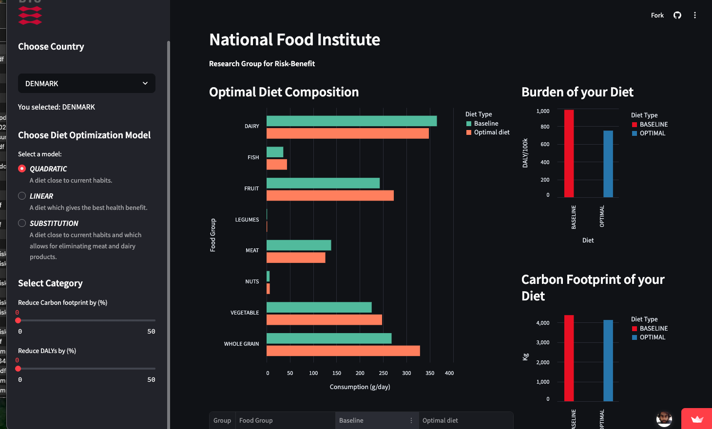
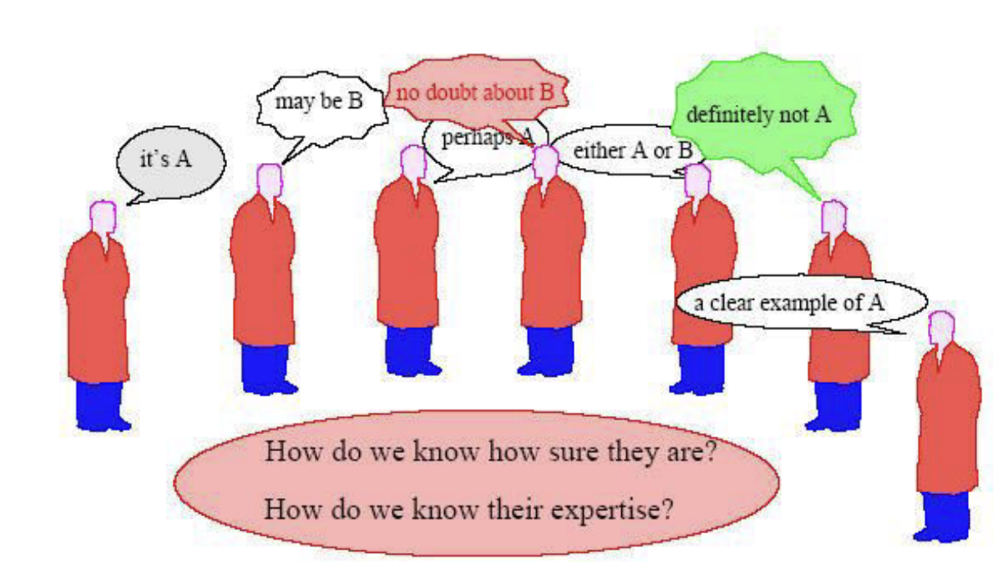
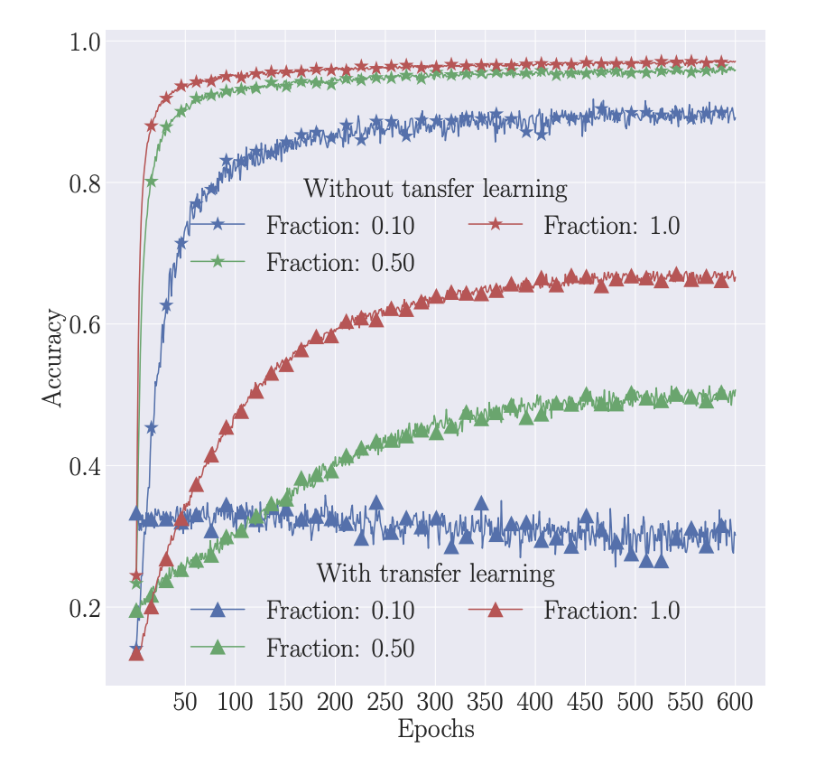

Machine Learning researcher with a focus on probabilistic modeling, optimization, and deep learning for high-dimensional noisy systems. Currently building transformer-based models from scratch to understand how modern language models learn, scale, and generalize.
Real-time computer vision system for underwater vegetation detection and quantification.

Optimization framework combining nutrition, health impact, and sustainability.

Ensemble learning framework combining multiple models for improved prediction stability.

Variational Bayesian deep learning for transfer learning under uncertainty.